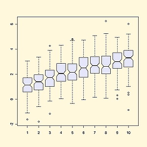
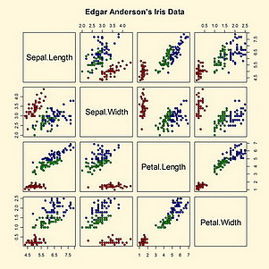
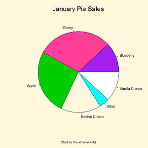
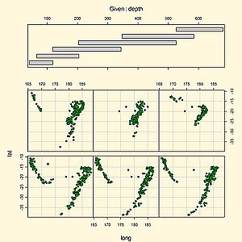
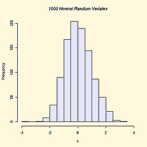
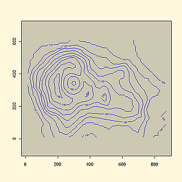

|   |  | ||||||||||
|
Description : Ce module offre une introduction aux idées et techniques fondamentales de la modélisation statistique. Toutes les notions et les procédures introduites en cours seront illustrées sur des données réelles lors des travaux pratiques. Les implémentations numériques seront faites en utilisant le logiciel R. Prérequis : théorie des probabilités, notions de statistique paramétrique. Evaluation : - comptes rendus des TP (45%), - examen écrit (45%), - contrôle continu (10%). |
 | ||||||||||
|
Programme : - Statistique descriptive - Analyse statistique mutivariée - Modèle à observations independantes de même loi - Modèle linéaire simple - Régression linéaire multiple - Tests d'adéquation Equipe enseignante :
Documents pédagogiques : [Polycopié du cours] [Slides du chapitre 1] [Consignes pour les comptes-rendus des TP] [TP1] [AirQuality.data] [TP2] [painting8.dat] [painting64.dat] [TP3] [TP4] [TP5] [TP6] |
 |
||||||||||
|
Bibliographie :
Sujets des examens des années précédentes : [2008] [2009] [2010] [2011] |
 |